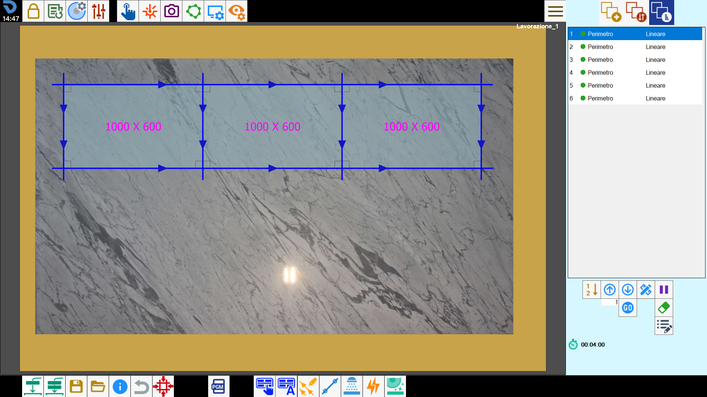
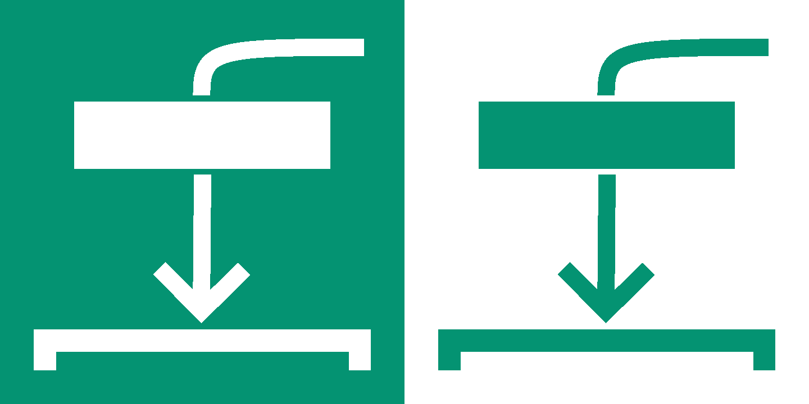
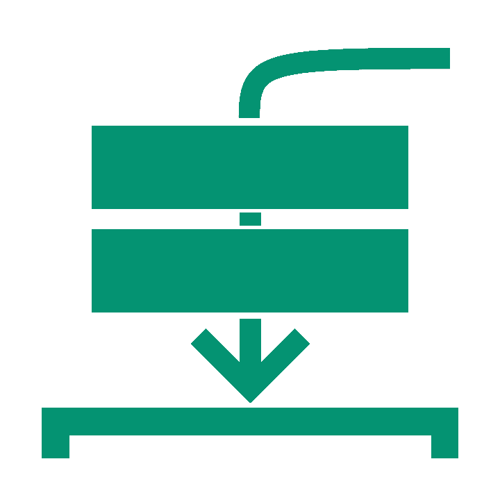
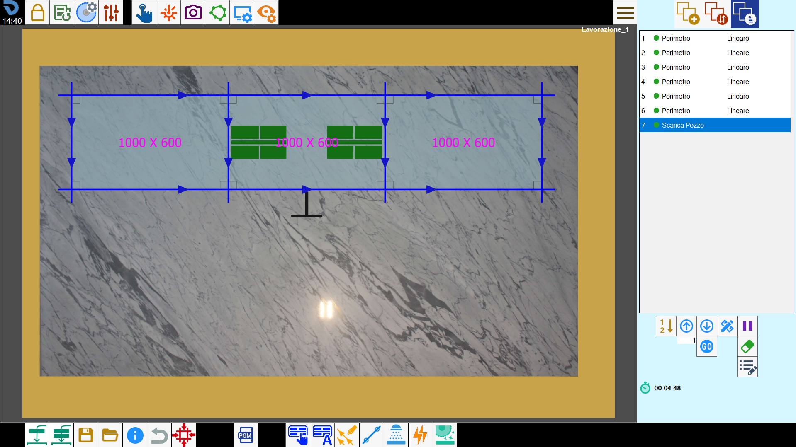
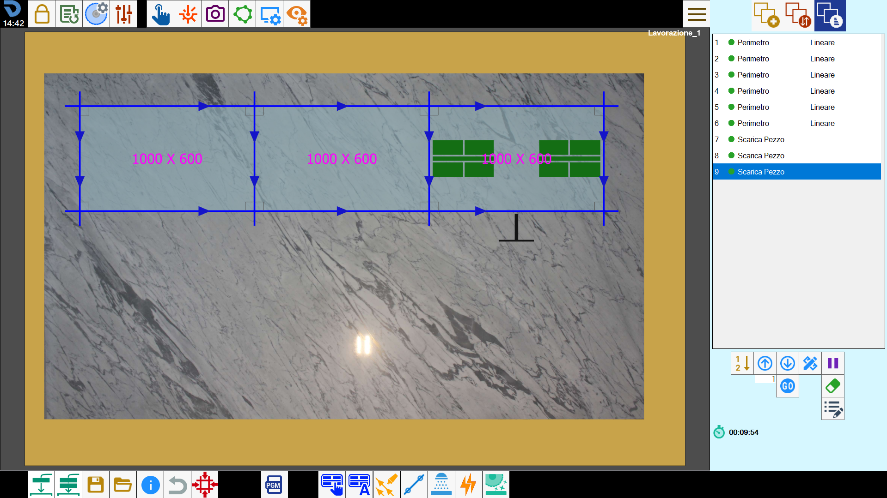
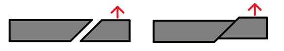
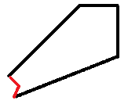
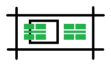

Through this functionality it is possible to program the movement of a piece in a predefined position of the machine.
The program calculates the piece’s center movement until a machine coordinate X, Y and Z defined in the parameters.

Mode of adding unload piece
 | Single |
 | All pieces |
Single
After having activated the single mode it will be possible to click on the piece that you wish to unload .
In the following example image it is possible to observe the application of the functionality to the piece placed at the center, with the relative addition of a cut in the cut list on the right side:

All pieces
This mode allows to automatically unload all pieces present in the work area. Consequently, their cuts are added to the list visualized in the right lateral panel.
Below is reported a next example after execution of the mode:

Required precautions
The program does not perform checks to prevent the displacement of the material in some particular situations that can happen.
Such controls are to be considered at the operator of the machine's charge.
The situations to which pay particular attention are the following:
Miter cut: in the case the piece has miter cut is possible that the piece remain blocked from the slab.

Piece with contour cuts: it is possible that the piece will not be cut entirely, in this case when the function will try to lift the piece this last one will remain attached to the slab.

Internal cuts within the perimeter: in case of internal cuts within the piece's perimeter it's necessary to check and eventually move the position of the vacuum cups to allow the vacuum.
